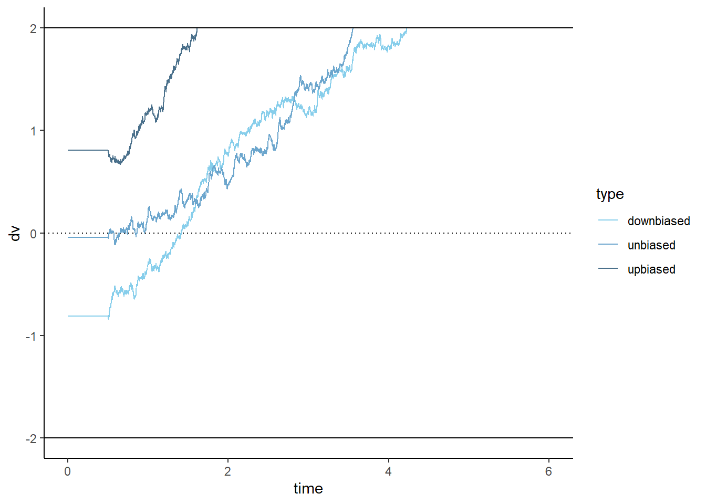

22 Drift Diffusion Modell
Jeden Tag treffen wir Tausende von kleinen Entscheidungen, meistens unter gewissem Zeitdruck. Viele davon sind trivial (z. B. welches Paar Socken man anzieht) und automatisch (z. B. ob man die Espresso- oder Lungo-Taste auf der Kaffeemaschine drückt). Die meisten Entscheidungen im wirklichen Leben setzen sich eigentlich aus zwei Entscheidungen zusammen: Einerseits der Entscheidung, mit dem Abwägen aufzuhören und aufgrund des aktuellen Wissenstandes zu handeln. Andererseits die Wahl oder Entscheidungshandlung selbst. Dieser sequentielle Charakter der Entscheidungsfindung ist eine grundlegende Eigenschaft des menschlichen Nervensystems.
Computational Models zur Untersuchung von Entscheidungen mit zwei Alternativen basieren typischerweise auf drei Annahmen (Bogacz et al., 20061) :
Evidence accumulation: Die Evidenz zugunsten jeder Alternative wird über die Zeit hinweg integriert.
Diffusion: Dieser Prozess unterliegt zufälligen Schwankungen.
Decision: Eine Entscheidung wird getroffen, sobald genügend Evidenz für eine der beiden Alternativen vorliegt.
22.1 DDM: Modell eines Entscheidungsprozesses
In unserem Random dot Experiment wurde neben der Antwort der Versuchspersonen (links, rechts) auch die Zeit (rt) gemessen, welche benötigt wurde um diese Antworten zu geben. Diese Information wurde in den vorherigen Modellen nicht gleichzeitig mit der Antwortgenauigkeit berücksichtigt.
Ein Modell mit dem solche Entscheidungsprozesse modelliert werden sind Drift-Diffusion-Modelle. Es geht davon aus, dass binäre Entscheidungen auf der Anhäufung von verrauschten Beweisen basieren, beginnend am Ausgangspunkt und endend an einer Entscheidungsschwelle, die mit einer bestimmten Entscheidung verbunden ist.
Das Modell hat mindestens vier Parameter:
Drift rate steht für die durchschnittliche Anzahl von Beweisen pro Zeiteinheit und ist ein Index für die Schwierigkeit der Aufgabe oder die Fähigkeit des Subjekts.
Boundary separation stellt die Vorsicht dar; eine größere Trennung der Grenzen führt zu weniger Fehlern (wegen geringerer Auswirkung des Diffusionsrauschens innerhalb des Trials), jedoch um den Preis einer langsameren Reaktion (speed-accuracy tradeoff).
Starting point repräsentiert die a-priori Präferenz für eine der Wahlalternativen.
Non-decision time ist ein Verzögerungsparameter, der die Zeit für periphere Prozesse (Kodierung eines Reizes, Umwandlung der Repräsentation des Reizes in eine entscheidungsbezogene Repräsentation) und Ausführung einer Reaktion misst.
Die Gesamtzeit für eine Reaktion ist die Zeit für die Ausbreitung vom Startpunkt bis zur Grenze plus die Non-decision time.
Annahmen des DDM
Das DDM geht von folgenden Annahmen aus:
Binary decision making: DDM ist ein Model für binäre Entscheidungen. Es gibt also 2 Möglichkeiten zwischen denen entschieden werden muss (in unserem Beispiel: rechts und links).
Continuous sampling: Es wird davon ausgegangen, dass die Person den Stimulus verarbeitet und über die Zeit Evidenz akkumuliert (sequential sampling). Entscheidungen beruhen demnach auf einem kontinuierlichen Verarbeitung von Daten.
Single-stage processing: Entscheidungen basieren auf einer einstufigen Verarbeitung.
Parameter sind konstant. Das heisst z.B. die drift rate kann sich nicht über Zeit verändern.
Im Modell wird die Zeit in ganz kleine Schritte \(\Delta_t\) unterteilt (diskrete Zeitschritte). Diese Evidenz wird in einer Entscheidungsvariable (decision variable: dv) gesammelt.
Um nachzuvollziehen, wie sich eine Entscheidung (in unserem Beispiel: rechts und links) innerhalb eines Trials entwickelt, kann dieser Prozess in R simuliert werden.
ggplot() +
geom_hline(yintercept = c(-1, 1)) +
geom_hline(yintercept = 0, linetype = 3) +
labs(x = 'Time', y = 'Evidence (dv)') +
scale_y_continuous(breaks = c(-1, 0, 1),
labels = c('left', '0', 'right')) +
theme_minimal()22.2 Random walk
Ein Random walk ist das Resultat der Aufsummierung von Zufallszahlen. Dies kann in R selbst nachvollzogen werden:
Dazu wird ein Random walk mit 100 Zeitschritten simuliert (mit rnorm()). Es wird mit \(0\) begonnen und dann werden 99 normalverteilte Zufallszahlen dazuaddiert, also die kumulierte Summe berechnet (hierfür eignet sich die Funktion cumsum()).
library(gganimate) # library for animation
set.seed(546)
# 0 + 100 standardnormalverteilte Zufallszahlen
zufallszahlen_1 = c(0, rnorm(99, 0, 1))
random_walk_1 = cumsum(zufallszahlen_1)
d1 = tibble(t = 1:100,
rand_walk = random_walk_1)
d1 |>
ggplot(aes(x = t, y = rand_walk)) +
geom_step() +
geom_hline(yintercept = c(-30, 30)) +
geom_hline(yintercept = 0, linetype = 3) +
labs(x = 'Time', y = 'Random walk') +
scale_y_continuous(breaks = c(-30, 0, 30),
labels = c('left', '0', 'right')) +
theme_classic() +
transition_reveal(nb) # animateDie aktuelle decision variable zu Zeitpunkt \(t\) als wird hier als normalverteilte Zufallszahl modelliert. Dieser Random walk hat keinen Trend, weil jeder Wert aus einer Normalverteilung mit Mittelwert \(\mu=0\) gezogen wird.
22.3 Drift rate: Evidenzakkumulierung über die Zeit
Wenn stattdessen aus einer Verteilung mit \(\mu=0.1\) gezogen werden würde, ergäbe dies einen positiven Trend über die Zeit hinweg und es würde sich Evidenz für eine Entscheidungsrichtung ansammeln.
Die driftrate entspricht also dem Mittelwert der Evidenz und sd deren Standardabweichung.
Hands-on: Drift rate
Modellieren Sie die aktuelle decision variable zu Zeitpunkt \(t\) als normalverteilte Zufallszahl, bei der die driftrate nicht 0 entspricht.
Verändern Sie dafür die Werte der Variablen mean_driftrate (positive und negative Werte) und sd_driftrate im Code.
Was passiert?
Ist der Mittelwert für die decision variable positiv wird zunehmend Evidenz für die positive Entscheidungsoption gesammelt.
driftrate = 0.5
sd = 0.1Ein “Stück†Evidenz ist also meistens positiv:
evidence = rnorm(n = 1, mean = driftrate, sd = sd)
evidence[1] 0.4962433evidence = rnorm(n = 1, mean = driftrate, sd = sd)
evidence[1] 0.4442915evidence = rnorm(n = 1, mean = driftrate, sd = sd)
evidence[1] 0.7051354Dies bedeutet, dass zum Zeitpunkt \(t\) die Evidenz ungefähr 0.71 beträgt. Da die Evidenz die durchschnittliche Steigung repräsentiert, wird Evidenz \(>0\) dazu führen, dass ein Schritt in Richtung der oberen Grenze gemacht wird. Wäre die Evidenz negativ, wird ein Schritt nach unten gemacht. Da die Evidenz aus einer Normalverteilung gezogen wird, ist es also möglich, dass die Evidenz zufällig negativ wird, obwohl die drift rate, d.h. die Repräsentation der Stimulusstärke, positiv ist.
Wenn dieser Prozess nun über mehrere Zeitschritte hinweg wiederholt wird und die evidence Werte aufsummiert werden, ergibt sich die decision variable. Diese gleicht einem Random walk, hat aber einen Drift in die Richtung der durchschnittlichen Evidenz.
set.seed(546)
t = 100
d3 <- tibble(
nb = 1:t,
random_walk_neg = cumsum(c(0, rnorm(t-1, -0.3, 1))),
random_walk_neutral = random_walk_1,
random_walk_pos = cumsum(c(0, rnorm(t-1, 0.3, 1)))
) |>
pivot_longer(cols = c(random_walk_neg, random_walk_neutral, random_walk_pos),
names_to = "name",
values_to = "value")
# aggregate dataset and plot
d3 |>
ggplot(aes(x = nb, y = value, color = name)) +
geom_step() +
geom_hline(yintercept = c(-30, 30)) +
geom_hline(yintercept = 0, linetype = 3) +
lims(y = c(-30, 30)) +
labs(x = 'Time', y = 'Random walk', color = '') +
scale_y_continuous(breaks = c(-30, 0, 30),
labels = c('left', '0', 'right')) +
scale_color_manual(labels = c('negative drift', 'no drift', 'positive drift'), values = c("tomato4", "black", "skyblue")) +
theme_classic()22.3.1 Evidenzakkumulierung in R modellieren
Die Evidenzakkumulierung kann als Iterationen über einzelne Zeitschritte hinweg modelliert werden. In R kann dies mit einem for Loop gemacht werden.
driftrate = 0.5
sd = 0.1
n_steps = 10
evidence = rep(NA, n_steps)
dv = rep(NA, n_steps)
time_steps = 1:n_steps
# Ersten Wert aus der Verteilung ziehen
evidence[1] = rnorm(1, mean = driftrate, sd = sd)
dv[1] = evidence[1]
# Für jeden weitern Zeitpunkt eine Zufallszahl ziehen und zur kumulierten DV addieren
for (t in 2:n_steps) {
evidence[t] = rnorm(1, mean = driftrate, sd = sd)
dv[t] = dv[t-1] + evidence[t]}
Hands-on für Interessierte: Funktion erstellen
- Erstellen Sie aus dem obigen Code eine custom function:
- Wie soll die Funktion heissen? (->
name) - Was sind Inputs der Funktion? (->
()) - Was soll die Funktion tun? (->
{})
# Zur Erinnerung die Struktur einer custom Funktion
name = function(){
...
...
}- Der Output der Funktion soll ein data frame sein mit
evidenceunddv.
data_ddm <- name()- Machen Sie eine Abbildung dieser Daten
upper = ... # upper boundary
lower = ... # lower boundary
data_ddm |>
ggplot() +
...
...
geom_hline(yintercept = c(upper, loewr)) +
geom_hline(yintercept = 0, linetype = 3) +
labs(x = 'Time', y = 'Evidence (dv)') +
scale_y_continuous(breaks = c(upper, 0, lower),
labels = c('right', '0', 'left')) +
theme_classic()ddm_function = function(driftrate = 0.3,
sd = 0.5,
n_steps = 100){
evidence = rep(NA, n_steps)
dv = rep(NA, n_steps)
time_steps = 1:n_steps
# Ersten Wert aus der Verteilung ziehen
evidence[1] = rnorm(1, mean = driftrate, sd = sd)
dv[1] = evidence[1]
# Für jeden weiteren Zeitpunkt eine Zufallszahl ziehen und zur kumulierten DV addieren
for (t in 2:n_steps) {
evidence[t] = rnorm(1, mean = driftrate, sd = sd)
dv[t] = dv[t-1] + evidence[t]}
return(tibble(t = 1:n_steps, evidence, dv))
}data_ddm <- ddm_function()upper = 20 # upper boundary
lower = -20 # lower boundary
data_ddm |>
ggplot(aes(x = t, y = dv)) +
geom_step() +
geom_hline(yintercept = c(upper, lower)) +
geom_hline(yintercept = 0, linetype = 3) +
labs(x = 'Time', y = 'Evidence (dv)') +
scale_y_continuous(breaks = c(upper, 0, lower),
labels = c('right', '0', 'left')) +
theme_classic()22.4 Non-decision time, bias und boundaries
Die Decision Variable dv repräsentiert nun die kumulierten Evidenz, aufgrund dessen das Gehirn eine Entscheidung treffen kann. Wenn der Wert der decision variable grösser als die obere Grenze oder kleiner als die untere Grenze wird, wird die Evidenzakkumulierung abgebrochen, und eine Entscheidung getroffen.
Wir können nun noch die non-decision time hinzufügen, und den Anfangspunkt (bias) der Evidenzakkumulierung.
Die non-decision time beschreibt die Zeit, welche nicht der Evidenzakkumulierung dient. Vor dem Entscheidungsprozess ist das z.B. das Ausrichten des Blicks auf die Aufgabe, nach dem Entscheidungsprozes ist dies z.B. die Ausführung des Tastendrucks.
Der bias, also der Anfangspunkt ist ein sehr wichtiger Parameter der beeinflusst, ob schon vor dem Entscheidungsprozess zu einer gewissen Antwort tendiert wird (Antworttendenz). Wenn beispielsweise der Anfangspunkt unterhalb der Mitte liegt, braucht es weniger Evidenz um die untere Grenze zu überschreiten und mehr Evidenz für die obere Grenze zu überschreiten.
Die boundaries beeinflussen, wie viel Evidenz ausreicht, um eine Entscheidung zu treffen. Will man sich ganz sicher sein, sind die boundaries weiter auseinander.
| Parameter | Bedeutung | Anwendung |
|---|---|---|
| drift rate | Qualität der Evidenz pro Zeiteinheit | Task Schwierigkeit, Fähigkeit |
| bias | Anfangspunkt der Evidenzakkumulierung | A priori Präferenz für eine der beiden Alternativen |
| boundary separation | Vorsicht (caution) | Speed-Accuracy Trade-off |
| non-decision time | Verzögerung | Periphere Prozesse |
drift_diffusion = function(bias = 0.5, # z
driftrate = 0.8, # v
decision_boundary = 2, # a
ndt = 0.5, # t0
diffvar = 0.1,
dt = 0.001, # t step duration
max_time = 6) {
assertthat::assert_that(diffvar > 0)
# rescale bias so that 0.5 lies halfway between upper and lower bound
bias = as.numeric(2 * decision_boundary * bias - decision_boundary)
# initialize time_steps and dv
time_steps = max_time/dt
dv = array(dim = time_steps)
# start accumulating from bias (starting point)
dv[1] = rnorm(1, mean = bias, sd = sqrt(dt))
for (j in 2:time_steps) {
# non-decision time
if (j <= ndt/dt) {
dv[j] = dv[j-1]
}
else {
error = rnorm(1, 0, sqrt(diffvar * dt))
dv[j] = dv[j-1] + driftrate * dt + error # Cobb & Zacks (1985), Eq. 1.14
if (abs(dv[j]) > decision_boundary) {
dv[j] = dplyr::if_else(dv[j] > 0,
min(dv[j], decision_boundary),
max(dv[j], -decision_boundary))
break()
}
}
}
d = dplyr::tibble(time = round(seq_along(dv) * dt, 3),
dv = dv,
steps = seq_along(dv),
driftrate = driftrate,
decision_boundary = decision_boundary,
bias = bias,
ndt = ndt)
return(d)
}
Hands-on: DDM Parameter
Verändern Sie im Code die Werte der Variablen
mean_driftrate(positive und negative Werte)sd_driftratebiasboundarytimesteps.
Was passiert?
22.5 Auswirkungen der Parameter
Um den Effekt dieser Parameter zu visualisieren, können Trials mit unterschiedlichen Parameterwerten geplottet werden.
22.5.1 Drift rate
Wenn die drift rate viel grösser als \(0\) ist, also \(>> 0\), wird die obere Entscheidungsgrenze (decision boundary) schnell erreicht. Zudem wird es nur wenige Fehler geben. Ist die drift rate kleiner, aber immer noch \(> 0\), wird die durschnittliche Zeit länger, um eine korrekte Antwort zu geben.
set.seed(829)
slow = drift_diffusion(driftrate = 0.8) |> mutate(type = "slow")
fast = drift_diffusion(driftrate = 1.2) |> mutate(type = "fast")
fastslow = bind_rows(fast, slow)
fastslow |>
ggplot(aes(time, dv, color = type)) +
geom_hline(yintercept = 0, linetype = 3) +
geom_line() +
scale_color_manual(values = c("skyblue3", "skyblue")) +
geom_hline(yintercept = c(-2, 2)) +
theme_classic()22.5.2 Bias
Wenn der bias \(>0.5\) ist, wird die obere Entscheidungsgrenze schneller erreicht. Hier gibt es nun eine Interaktion mit der drift rate—ist diese klein, und der bias \(<0.5\), ist die Chance, schnelle Fehler zu machen erhöht.

set.seed(29)
unbiased = drift_diffusion(bias = 0.5) |> mutate(type = "unbiased")
upbiased = drift_diffusion(bias = 0.7) |> mutate(type = "upbiased")
downbiased = drift_diffusion(bias = 0.3) |> mutate(type = "downbiased")
bias = bind_rows(unbiased, upbiased, downbiased)
bias |>
ggplot(aes(time, dv, color = type)) +
geom_hline(yintercept = 0, linetype = 3) +
geom_line() +
scale_color_manual(values = c("skyblue","skyblue3", "skyblue4")) +
geom_hline(yintercept = c(-2, 2)) +
theme_classic()22.5.3 Boundary separation
Liegen die Grenzen weiter auseinander, braucht es mehr akkumulierte Evidenz, um eine der Grenzen zu erreichen. Dies führt dazu, dass weniger Fehler gemacht werden, da die zufällige Fluktuation über längere Zeit hinweg einen weniger starken Einfluss hat. Deshalb kann eine Verschiebung der Grenzen den Speed-Accuracy Trade-off erklären.
set.seed(90)
carefree = drift_diffusion(decision_boundary = 1.6) |> mutate(type = "carefree")
cautious = drift_diffusion(decision_boundary = 2.1) |> mutate(type = "cautious")
cautiouscareless = bind_rows(carefree, cautious)
decision_boundaries = tribble(~type, ~decision_boundary,
"carefree", 1.6,
"cautious", 2.1)
cautiouscareless |>
ggplot(aes(time, dv, color = type)) +
geom_hline(yintercept = 0, linetype = 3) +
geom_line() +
scale_color_manual(values = c("skyblue", "skyblue4")) +
geom_hline(aes(yintercept = decision_boundary, color = type), data = decision_boundaries) +
geom_hline(aes(yintercept = -decision_boundary, color = type), data = decision_boundaries) +
theme_classic()22.5.4 Non-decision time
Eine Veränderung der non-decision time hat eine Auswirkung auf die durschnittliche Reaktionszeit, hat aber keinen Einfluss auf die Fehlerrate.
set.seed(4534)
longndt = drift_diffusion(ndt = 0.7) |> mutate(type = "longndt")
shortndt = drift_diffusion(ndt = 0.2) |> mutate(type = "shortndt")
ndt = bind_rows(longndt, shortndt)
ndts = tribble(~type, ~ndt,
"longndt", 0.7,
"shortndt", 0.2)
ndt |>
ggplot(aes(time, dv, color = type)) +
geom_hline(yintercept = 0, linetype = 3) +
geom_line() +
scale_color_manual(values = c("skyblue", "skyblue4")) +
geom_vline(aes(xintercept = ndt, color = type), data = ndts) +
geom_hline(yintercept = c(-2, 2)) +
theme_classic()
Hands-on: Interpretation der Random Dot DDM Parameter
Wie können die DDM Parameter interpretiert werden?
| term | estimate |
|---|---|
| Drift rate | 0.01 |
| bs_accuracy | 3.07 |
| bs_speed | 2.48 |
| ndt | 0.00 |
| bias | 0.50 |
library(brms)
library(cmdstanr)
fit = brm(bf(rt | dec(resp) ~ 0,
bs ~ 0 + condition),
data = d,
family = wiener(link_bs = "identity",
link_ndt = "identity",
link_bias = "identity"),
cores = parallel::detectCores(),
chains = 4,
backend = "cmdstanr")Die Daten stammen aus dem Random Dot Experiment FS24. Das Experiment war identisch mit dem diesjährig durchgeführten.
22.6 Diffusions Modell in der Forschung
Weil mit dem Diffusionsmodell verschiedene Aspekte des Entscheidungsprozesses spezifisch modelliert und unterschieden werden können, wird dieses Modell häufig in der Forschung verwendet. So können detaillierte Einsichten in den Entscheidungsprozess gewonnen werden. Hier ein paar Beispiele:
- Untersuchung der kognitiven Eigenschaften bei ADHS Review
- Untersuchung des Entscheidungsverhaltens im Zusammenhang mit Abhängigkeit (Tabak, Alkohol und Glücksspiel)
- Untersuchung des Entscheidungsverhaltens im Zusammenhang mit Depression, und Angst.
- Untersuchung von verändertem Entscheidungsverhalten aufgrund von strukturellen oder funktionalen Veränderungen des Gehirns z.B. bei Parkinson.
Bogacz, Rafal; Eric Brown, Jeff Moehlis, Philip Holmes, Jonathan D. Cohen (2006). “The Physics of Optimal Decision Making: A Formal Analysis of Models of Performance in Two-Alternative Forced-Choice Tasks”. Psychological Review. 113 (4): 700–765. https://doi.org/10.1037/0033-295X.113.4.700↩︎